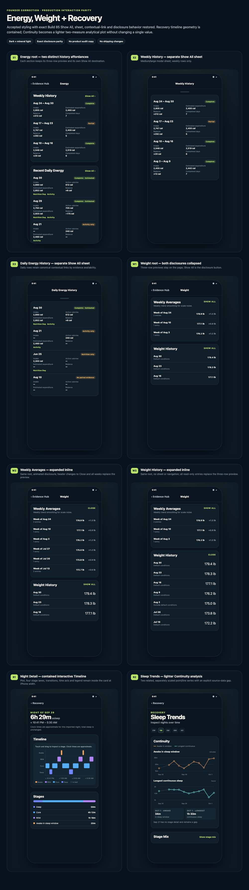
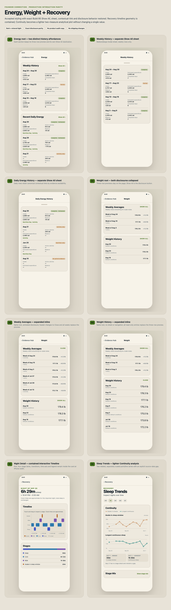
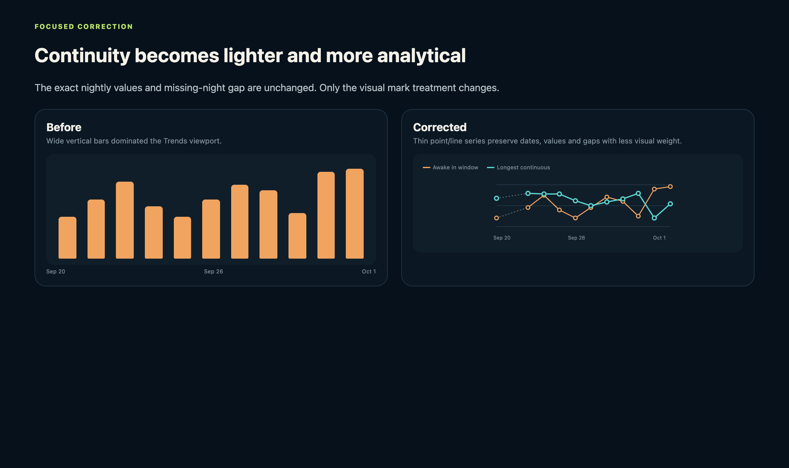

Founder correction · production interaction parity
Energy, Weight + Recovery
Eight focused product templates prove separate Energy sheets, exact inline Weight disclosures, a contained Night Detail timeline and the lighter Continuity treatment. Dark and mineral-light content and geometry are identical.
Energy · 3Weight · 3Recovery · 216 theme renders
Dark

Mineral light

Continuity before / after
